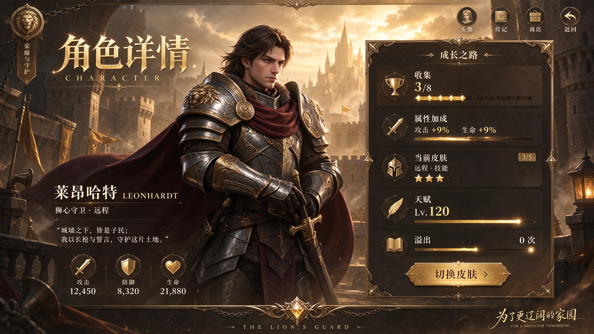
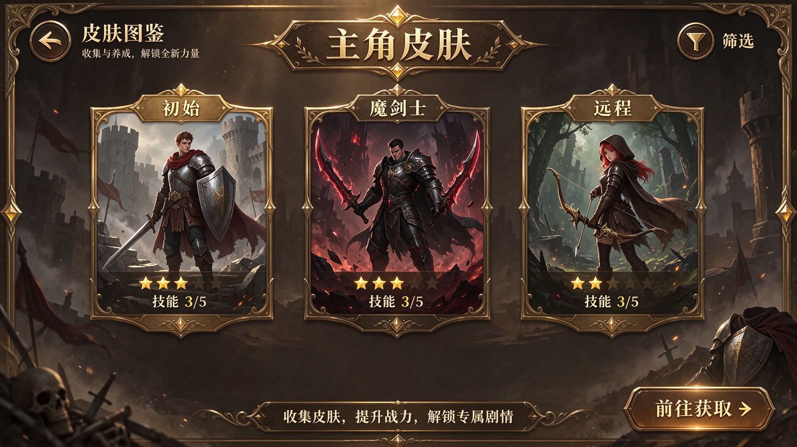
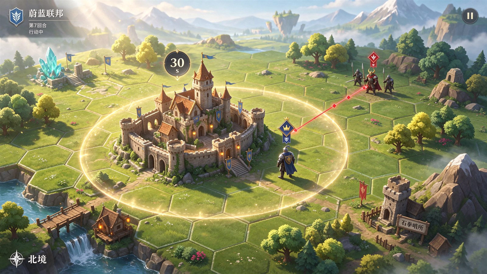

CAPTAIN · DESIGN BOARD · 2026-11-26
主角单位 · 设计图
对齐《主角单位规则与研发说明》第 6 版。四张结构图说明「三条线怎么解耦、主角怎么活、成长长什么样、数据怎么流」；后附三张 UI 概念图。
张数 → 属性
星级 → 技能
使用中 → 打法
属性 / 技能 / 打法 互不引用
图 01
三条线怎么解耦
收集、重复、使用是三种不同的玩家行为，各给一条互不干扰的收益。任何一条改动都不应牵动另外两条。
图 02
主角怎么活：生命周期与对局时间轴
开局立即产出；死亡后主城重新倒计时 30s。主城被毁后不再复活，但已存在的主角继续存活，改以最近的己方建筑为锚点。
图 03
成长长什么样：天赋曲线
数据来自 armyLevel 66014 的 201 级实际节点：40 次生命 +10%、40 次伤害 +5%、40 次暴伤 +2%、19 次攻速 +2%、6 次移速 +5%。满级约 生命×5.0 / 攻击×3.0。
生命倍率
攻击倍率
攻速倍率
移速倍率
图 04
数据怎么流：协议 → 入局编译 → 战斗 → 表现
所有数值在入局时冻结成纯数据，战斗层不认识"星级"、也不读全局表；这样多端一致、回放可复现。
图 05–07
UI 概念图
用于对齐信息层级与氛围，不代表最终美术精度。三张图分别回答：玩家在哪看主角、在哪选皮肤、局内怎么认出它。

图 05 角色页 · 主角卡信息层级：收集 3/8 → 属性 +9% / +9% → 当前皮肤（技能 3/5）→ 天赋 Lv.120 / 溢出 0 次；切换入口放在角色页，不进战斗内。

图 06 皮肤图鉴每张卡只展示「星级 + 技能档位」，不写属性——避免玩家误以为升星会变强。

图 07 局内标识巡逻圈、锁敌线、主城上的复活倒计时，是自动单位全部的「可读性」。